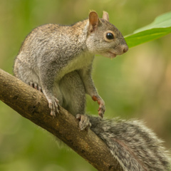

La ardilla de Yucatán (Sciurus yucatanensis) es una especie de roedor de la familia Sciuridae.
Esta especie habita los bosques de Guatemala, Belice y la península de Yucatán en México.
Vive arriba de los árboles, donde se protege de depredadores, recolecta comida durante el día y duerme de noche en nidos construidos sobre las ramas con hojas y ramitas. Su alimentación consiste en semillas, bayas y frutas.
Caracteristicas